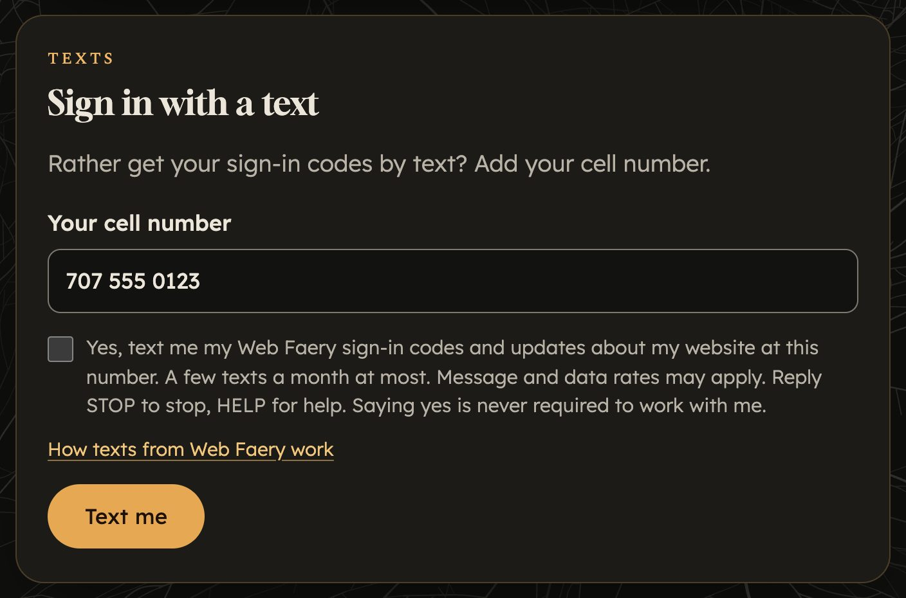

Just the useful bits
- Your sign-in codes for your Web Faery portal, when you ask for one.
- Now and then, a short note about your website, like “your draft is ready to look over”.
- Replies, if you text me and I answer.
No ads, no promotions, and I never text anyone who hasn’t said yes. Texts come from (707) 232-8986 and start with “Web Faery”.
Only if you tick the box
In your portal, under Texts, you can add your cell number and tick a box that says:
Yes, text me my Web Faery sign-in codes and updates about my website at this number. A few texts a month at most. Message and data rates may apply. Reply STOP to stop, HELP for help. Saying yes is never required to work with me.

Saying no is completely fine. Everything still comes by email.
A few a month at most
Usually just a sign-in code when you ask for one, and a note when something is ready for you. Message and data rates may apply, depending on your phone plan.
Stop anytime
Reply STOP to any text and they stop right away. Reply HELP for help, or email me at taya@webfaery.love. You can also turn texts off in your portal.
Your number stays with me
Your number is only used for these texts. I never sell, rent or share your number, or your yes to texts, with anyone for their marketing. The texts go out through Twilio, the text message service I use, only so they can reach you. Carriers aren’t responsible for texts that arrive late or don’t arrive.
What you share for your website (in your portal, getting-started page or emails) is only for building it. It’s never shared or sold.